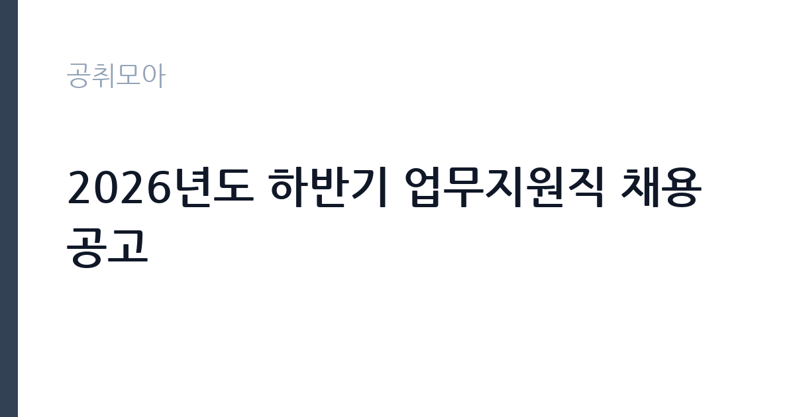

[공공기관] 2026년도 하반기 업무지원직 채용 공고
국민건강보험공단 · 전국 · 마감 2026-11-16 (D-14) · 출처 나라일터

한눈에 보는 모집 조건
| 기관 | 국민건강보험공단 |
|---|---|
| 공고명 | 2026년도 하반기 업무지원직 채용 공고 |
| 고용형태 | 정규직 |
| 근무지 | 전국 |
| 게시일 | 2026-11-02 |
| 마감일 | 2026-11-16 (D-14) |
지원자격, 이렇게 읽으세요
- 업무지원직(사무, 환경미화, 보안지원, 시설지원) 59명
- 접수 ~2026-11-16 마감
- 세부 조건은 원문 공고문 확인
정규직 채용은 기간의 정함이 없는 근로계약을 전제로 합니다. 수습 기간을 두고 평가한 뒤 정규직으로 확정하는 절차가 일반적이며 기관의 인사 규정과 임금 체계를 적용받습니다. 이번 공고는 국민건강보험공단에서 직접 진행하는 자체 전형으로, 응시자격과 제출서류는 공고문에 항목별로 제시됩니다. 임용일 기준 공단 정년 미만이어야 하며, 정년은 사무지원직 60세, 환경미화·보안지원·시설지원직 65세로 다르게 적용됩니다. 대한민국 국적을 보유하고 임용일부터 근무가 가능해야 하며, 남자는 병역을 마쳤거나 면제되어야 합니다. 공단 인사규정 제14조 결격사유와 병역법 제76조 제1항의 병역의무 불이행 사유에 해당하지 않아야 합니다. 분야별로 직무 관련 경력이나 자격을 요구하는 경우가 있으므로 공고문의 분야별 자격요건 표를 확인하십시오. 서류는 접수 마감 이후 보완이 되지 않으므로 자격 요건과 증빙 서류를 마감 전에 모두 갖춰야 합니다. 공고문에 명시된 우대 사항은 해당 여부를 확인해 증빙을 첨부해야 가점이 반영됩니다. 학력이나 전공 요건이 없는 공고라도 제출서류 목록은 그대로 적용되므로 서류 준비 부담은 줄지 않습니다.
이 공고의 포인트
이 공고의 첫 번째 포인트는 고용 형태입니다. 수습 기간 평가를 통과하면 기간의 정함이 없는 신분이 되어 고용이 안정됩니다. 두 번째는 업무 범위가 명확하다는 점입니다. 업무지원직(사무·환경·보안·시설) 직무로 채용되므로 배치 이후 담당 업무가 크게 흔들리지 않습니다. 세 번째는 근무지입니다. 전국 단위 채용이라 희망 근무지와 실제 배치 지역을 함께 확인해야 합니다. 직무 특성이 분명해 본인의 경험과 맞는지 빠르게 판단할 수 있습니다. 같은 직무로 함께 올라온 공고 8건 가운데 마감이 중간에 위치하므로 다른 공고와 일정이 겹치는지 확인하십시오. 선발 인원이 59명으로 규모가 있어 서류와 면접 점수를 함께 관리하는 전략이 필요합니다.
전형은 어떻게 진행되나
전형은 서류심사와 면접심사를 기본으로 하고 직무에 따라 필기나 실기, 체력검정이 추가됩니다. 서류 단계에서는 응시자격 충족 여부와 제출서류 형식을 확인하며 이 단계에서 탈락하는 지원자가 적지 않습니다. 면접은 직무 이해도와 경험을 확인하는 방식으로 진행되고 발표는 개별 통보나 홈페이지 게시로 이뤄집니다. 최종합격 이후에는 결격사유 조회와 채용 신체검사가 이어지며 이 절차에서 문제가 확인되면 합격이 취소될 수 있습니다. 구체적인 전형 단계와 배점은 공고문에 표로 정리되어 있으니 원문을 기준으로 준비하십시오. 결과 발표는 문자와 이메일로 동시에 이뤄지지 않는 경우가 있어 두 경로를 모두 확인하십시오.
원문에서 확인한 전형 방식
국민의 건강한 미래를 책임지는 국민건강보험공단에서 공단 사업을 함께 이끌어 갈 역량있는 인재를 아래와 같이 모집합니다. ○ 채용분야: 업무지원직(사무지원, 환경미화, 보안지원, 시설지원) ○ 채용인원: 총 59명 ○ 접수기간: 2026.11.2.(월)~11.16.(월) 15:00까지 … 15일간 ○ 접수방법: 온라인접수(https://recruit.incruit.com/nhis/) ○ 채용절차: 공고 및 접수 → 서류심사 → 인성검사, 증빙제출 → 면접심사 → 최종합격자 발표 → 수습임용 ○ 안내사항 - 모집단위를 달리하여 중복지원 할 수 없으며, 중복지원이 확인될 경우 지원분야 전체를 불합격 처리합니다. - 지원서 작성 및 시스템 이용방법 등에 대해서는 채용대행업체 인바스켓으로 문의(☎070-4272-1255)하시기 바랍니다. - 기타 자세한 사항은 첨부한 채용 공고문 및 분야별 직무기술서를 참고하여 주시기 바랍니다.
이런 분께 추천해요
- 사무·환경·보안·시설 분야 중 하나의 요건을 충족하는 분
- 전국 지사 근무와 교대 일정을 수용할 수 있는 분
- 정년 기준(60세 또는 65세)을 확인한 분
지원 전 체크리스트
- 응시자격 요건과 경력 기준을 충족하는가 — 경력은 증명서로 입증해야 합니다
- 수습 기간과 정규직 전환 조건을 확인했는가
- 제출서류 목록을 모두 준비했는가 — 누락 시 서류 단계에서 탈락합니다
- 접수 마감 2026-11-16 이전에 접수 방식을 확인해 제출했는가
모집 일정과 제출 타이밍
공고 게시일은 2026-11-02, 접수 마감은 2026-11-16입니다. 준비 기간은 약 14일로 서류 준비와 자격 증빙을 함께 처리하기에는 넉넉하지 않은 편입니다. 첫 이틀 안에 공고문과 첨부 서식을 내려받아 요건을 확인하고 남은 기간에 증빙 서류를 발급받는 일정이 현실적입니다. 면접은 서류 합격자 발표 후 짧은 간격으로 진행되는 경우가 많으므로 서류 제출과 동시에 면접 준비를 시작하는 편이 안전합니다. 마감일에는 접수 시스템이 몰리므로 하루 전까지 제출을 마치는 것이 좋습니다. 임용 예정일이 빠르게 잡히는 공고이므로 현재 일정과 겹치지 않는지 미리 확인하십시오. 전국 단위 채용이라 지원 시 희망 근무지를 함께 고르는 경우가 많습니다. 배치 가능한 지사와 지역을 공고문에서 확인하십시오. 마감까지 2주 안팎이 있어 준비할 시간은 있지만 미루면 촉박해집니다. 선발 인원이 한 자릿수를 넘어 서류와 면접 점수를 함께 관리하는 전략이 필요합니다.
직무 이해하기: 공공기관
국민건강보험공단의 업무지원직은 본부와 전국 지사에서 공단 사업을 지원하는 실무 직군입니다. 이번 하반기 채용은 사무지원, 환경미화, 보안지원, 시설지원 네 분야로 나뉘어 총 59명을 선발합니다. 사무지원은 서류 접수와 확인, 전산 입력, 문서 정리를 맡고, 환경미화는 청사 내부 청결과 쓰레기 분리, 보안지원은 출입 통제와 순찰, 시설지원은 건물 설비 점검과 간단한 보수를 담당합니다. 분야마다 근무 시간대와 정년 기준이 다르므로 모집분야 표에서 본인 분야 행을 먼저 확정해야 합니다. 업무 강도와 근무 시간대는 부서 배치에 따라 달라지므로 면접에서 확인하는 것이 가장 정확합니다.
자기소개서 작성 팁
지원서는 지원 분야를 분명히 밝히고 그 분야에 맞는 경험을 앞세우는 것이 핵심입니다. 사무지원은 문서·전산 처리 경험을 건수와 함께 쓰고, 환경미화·시설지원은 담당 구역을 관리한 경험과 안전 수칙 준수를 구체적으로 제시하십시오. 보안지원은 순찰이나 응대 경험을 사례로 정리하십시오. 공단이 건강보험 제도를 운영한다는 점을 이해하고 있다는 문단을 더하면 준비도가 드러납니다. 직무 경험이 많지 않다면 경험의 양보다 과정을 구체적으로 쓰는 편이 낫습니다. 어떤 상황에서 무엇을 판단했고 어떤 결과가 나왔는지 순서대로 서술하면 신뢰가 생깁니다. 지원 동기와 기여 방안은 한 문단씩 짧게 유지하고, 가장 자신 있는 경험에 분량을 몰아주십시오. 마지막 문장은 포부보다 구체적인 실행 계획으로 끝내는 것이 좋습니다.
면접 준비 포인트
면접은 인성검사와 함께 진행되며, 지원 분야의 실무 태도를 확인합니다. 사무지원은 여러 업무가 겹칠 때 우선순위를 어떻게 정하는지, 환경미화·시설지원은 담당 구역을 어떻게 관리할지 묻습니다. 보안지원은 출입 통제 상황에서 응대 방식을 확인합니다. 모집단위를 달리해 중복 지원이 가능한지도 공고문에 명시되어 있으니 접수 전에 확인하십시오. 답변은 상황, 판단, 조치의 순서로 정리하면 전달이 분명해집니다. 모르는 질문에는 모른다고 밝히고 확인 방법을 제시하는 편이 억지 답변보다 낫습니다. 마지막에는 근무 의사와 함께 2026-11-16 이후 일정에 언제든 응할 수 있다는 점을 전달하십시오. 면접 당일 신분증과 제출서류 원본을 요구하는 경우가 있으니 공고문의 준비물 목록을 확인하십시오.
급여·근무조건 읽는 법
국민건강보험공단은 알리오 2025년 결산 공시 기준 일반정규직 1인당 평균보수 7,041만원, 신입사원 초임 4,321만원, 무기계약직 1인당 평균보수 3,505만원으로 공시되어 있습니다. 업무지원직은 공시된 일반정규직과 임금 체계가 다르므로 위 평균값을 본인 급여로 오해하면 안 됩니다. 수습임용 후 정규 전환 여부와 분야별 임금표가 공고문에 제시되어 있으니 항목별로 확인하십시오. 평균보수는 기본급에 고정수당·성과상여금·급여성 복리후생비를 합산한 값입니다. 2026년 적용 최저임금은 시급 10,320원, 월 환산 2,156,880원(주 40시간·209시간 기준)입니다. 고용노동부 고시 제2025-47호로 확정된 금액입니다. 공고문에 금액이 제시되지 않은 항목은 원문 보수표나 처우 설명에서 확인해야 하며 확인되지 않은 수치는 쓰지 않는 것이 원칙입니다. 비교할 때는 월 급여뿐 아니라 상여·명절휴가비·복지포인트·초과근무수당까지 포함한 연간 총액으로 계산하십시오. 기간제라면 계약 기간 동안의 총액을, 무기계약이라면 호봉 상승과 정년까지의 누적 소득을 기준으로 판단하는 편이 정확합니다.
자주 묻는 질문
- 선발 인원은 몇 명인가요?
공고문 기준 59명입니다. 직종별로 인원이 나뉘는 경우가 있으니 모집분야 항목을 함께 확인하십시오. - 근무지는 어디인가요?
전국 지역의 국민건강보험공단 소속 근무지입니다. 세부 주소와 출퇴근 조건은 원문 공고문에서 확인할 수 있습니다. - 보수는 얼마인가요?
채용 신분(정규직)과 기관 임금 규정에 따라 정해지며 구체적인 금액은 공고문 처우 항목에 제시됩니다. 금액이 공개되지 않은 경우에는 원문의 보수표를 확인하십시오.
함께 보면 좋은 공고
[공공기관] 2026년 한국특허정보원 체험형 청년인턴 채용 — 마감 2026-11-18[공공기관] 한국폴리텍대학 진주캠퍼스 행정지원직(사무직원 휴직 대체인력) 채용 공고 — 마감 2026-11-10[공공기관] 대구경북첨단의료산업진흥재단 2026년 3차 정원외 계약직원 채용공 — 마감 2026-11-17출처: 나라일터 공개정보를 바탕으로 공취모아가 정리한 안내글입니다. 모집 조건·일정은 변경될 수 있으니 지원 전 반드시 원문 공고문을 확인하세요. 본 글은 정보 제공용이며 합격을 보장하지 않습니다.